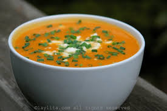

Sopa Crema de Calabaza
Ingredientes
| Cant | Productos |
|---|---|
| 1 un | Calabaza |
| 50 cc | Crema |
| 1 un | Laurel |
| c/c | Sal |
| 1 lt | Caldo de Pollo |
A tener en cuenta
- Tiempo de elaboración: 1:10hs
- Cantidad de calorias: 50 calorias por porción
- Rinde 4 porciones
- Costo: $80
Preparación:
- Lavar y pelar la calabaza
- Cortarla en trozos grandes
- Colocar una olla con el agua, el laurel, el apio, sal y la calabaza
- Dejarlo hervir durante 1 hora
- Procesar
- Servir